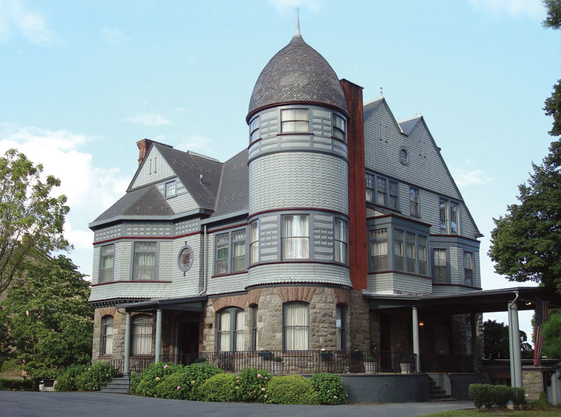
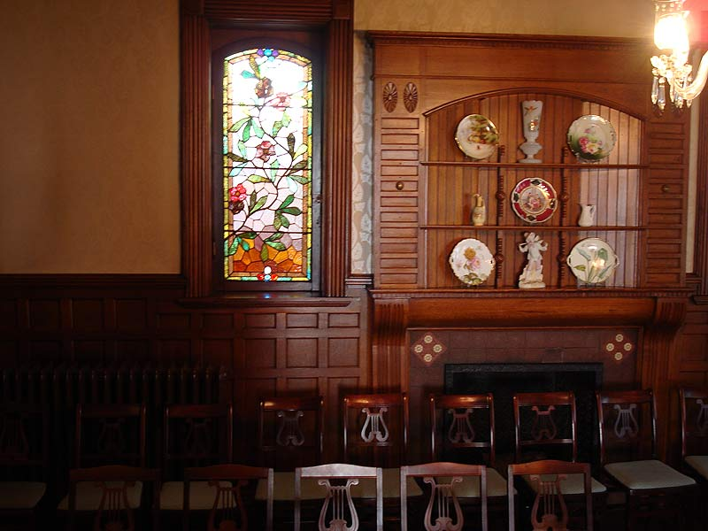
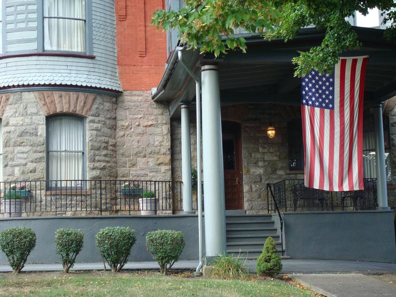
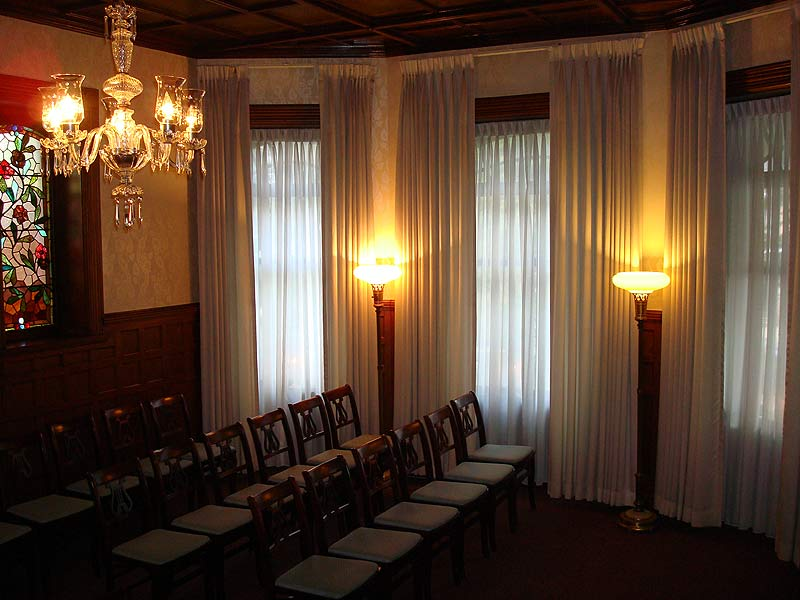
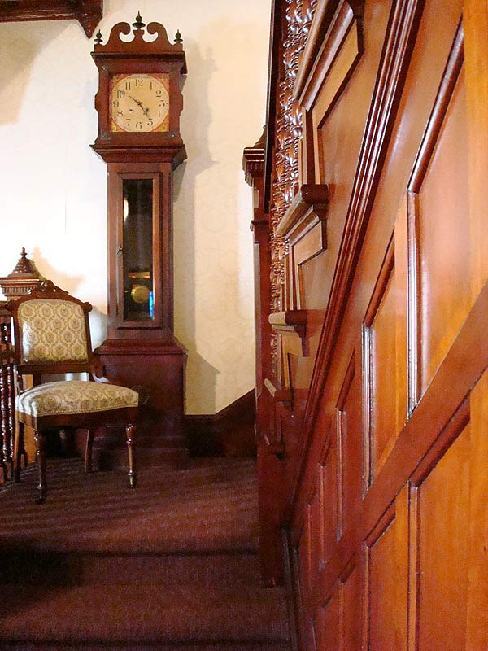
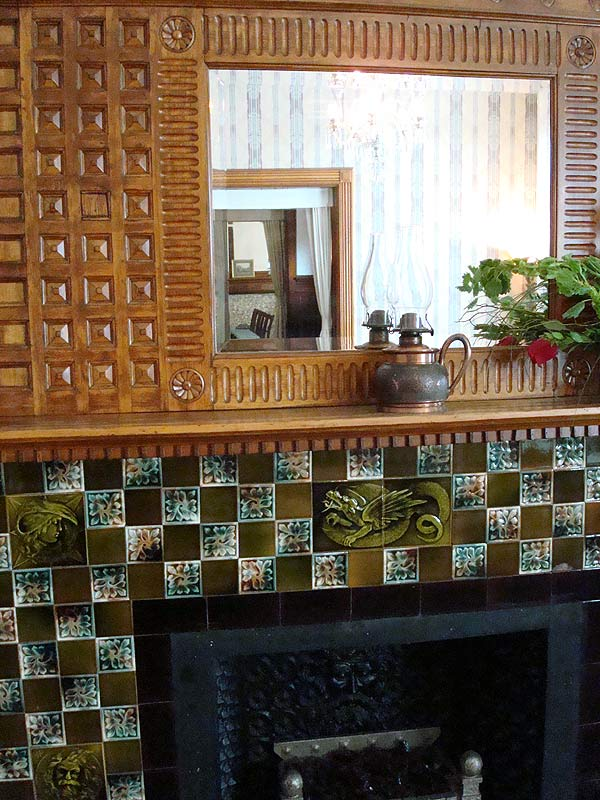

Spring
Tree of Remembrance
Each spring the family plants a tree as a living memorial to those who died the previous year – a tradition begun by their parents and continued today by the fifth generation.
Since 1847 the Ashton family has cared for the families of Easton. Today the fifth generation – Kline Jr., Debra and Scott – welcomes you to the Victorian house at 14th and Northampton Streets.

Whether your loss was expected or unexpected, your choices and responsibilities can seem overwhelming. Please call upon us any time. We are here to help you.
Ashton Funeral Home610-253-4678Contact us if you’d like us to take your loved one into our care.
If you haven’t already done so.
Make a few calls and ask each person to make a few specific calls of their own.
Ask close friends or family to answer the phone, greet visitors and help around the house.
A photo, age, birthplace, occupation, education, memberships, military service and immediate family. We will guide you through the rest.

“Many families have a family doctor, a family lawyer and a family minister. The Ashtons are proud to be, for many, their family funeral director.”
Funerals are a very personal business, and the Ashtons know members of their community personally. It is not unusual for someone to tell an Ashton that his grandfather was buried by their grandfather.
The Ashton Funeral Home is one of the oldest continuously operated, family-owned funeral homes in America. Experience, sincerity and dedication are the reasons for that longevity.
Whether your choice is burial or cremation, a traditional or contemporary service, you will have our full support before, during and after the funeral – arranged to fit your family’s needs and made meaningful and affordable.
Traditional or contemporary, with or without a viewing.
Here at the house, in your church or another meaningful place.
Parlors intimate enough for privacy, yet open to each other.
A current area of study for the Ashton family.
Plus cemeteries, keepsakes and personalized mementos.
Well versed in the rituals of Masons and veterans organizations.
Dove releases, a horse-drawn hearse, a motorcycle hearse, bagpipers and more.
Questions about death benefits, grief and bereavement, and referrals to counselors or support groups.
The mansion at 1337 Northampton Street offers families an elegant, yet relaxed, setting in which to honor their loved ones. Grieving families appreciate the comforting feeling of home that greets them at the door.






Each parlor is graced with a Victorian fireplace, carved wood paneling and doors, and period furnishings – traditional parlor comfort combined with modern technology. The parlors are intimate enough to offer privacy, yet opened to each other, so we can accommodate both large and small funerals.
Fred Ashton, Sr. and his wife Jean moved the funeral home to this house in 1948. It has welcomed Easton families ever since.
An easily accessible ramp and handicap parking are available.
Honoring families of all beliefs, cultures and backgrounds
The Ashton family was one of the first in the area to offer opportunities for healing and remembering beyond the funeral itself. Their most important gift is still given one family at a time – through personal mailings, phone calls and visits.
Spring
Each spring the family plants a tree as a living memorial to those who died the previous year – a tradition begun by their parents and continued today by the fifth generation.
Winter
With the cooperation of our local hospice, an annual community memorial service at year’s end, with hand-crafted keepsakes, and a Help for the Holidays program with tips for the first holidays after a loss.
Year-round
Programs on grief and bereavement for the public, and talks and tours for school groups, churches and other organizations.
Over the years, our family has received many gracious and beautifully written thank-you letters. Here are a few of them.
Thank you for your guidance and support when our dad passed away. Your family has taken care of my family for three generations, with such grace and compassion.
I know this is your ‘business’ but you took the ‘business’ out and made us feel comfortable in a very uncomfortable time.
The home atmosphere and comfort level was perfect and the reassuring environment made us all at ease during this hard time.
You turned a very traumatic situation into one that I could handle, and for that, I am eternally grateful.
It was a small event, numbers-wise, but you treat every single service … in such a caring and dignified manner. It made us feel good at a very sad time.
Many people have asked us these questions over the years. If yours isn’t here, please call – we are glad to talk it through.
Yes. Cremation is a separate event from the funeral or memorial service. Families often feel they have helped themselves heal best by holding a viewing and service before cremation. You may also choose a service after cremation, with or without the cremated remains present.
Some families choose a private interment directly after cremation; others schedule it later, when more family members can gather.
Funerals can be simple or elaborate, public or private, secular or religious, or a mixture of these. When we meet with you, we listen to your family stories and suggest options that might not occur to you – the place, the viewing, music, eulogy, readings, committal and the gathering afterwards.
Memories, photos, favorite possessions, artwork, music, poetry, even favorite foods let family and friends take part in remembering a unique life.
We generally recommend that children who are old enough for a church service are ready to attend a funeral, where they can work through their own grief and say goodbye in their own way. Children can be included at whatever level they are comfortable with; often the wisest course is to take cues from the children themselves.
It is good, if you can, to set aside money to help your family pay for your funeral and burial, and it can be an important part of estate planning. We offer a variety of options and payment methods, and we deposit all prepaid funds into a burial reserve fund at a local bank. Records of your wishes are kept in complete confidence.
The eulogy is a short speech about the life, character and memories of the person who died. The best-remembered eulogies are personal: think about their key qualities, share stories and give examples. Write a first draft in one sitting, practice it on someone you trust, then polish it. If you need a moment at the lectern, everyone will understand.
From US-22, take the Easton 13th St. exit. Turn right at the light onto N. 13th St., then right at the light onto Northampton St. We are on the right, at the corner of 14th and Northampton Streets.